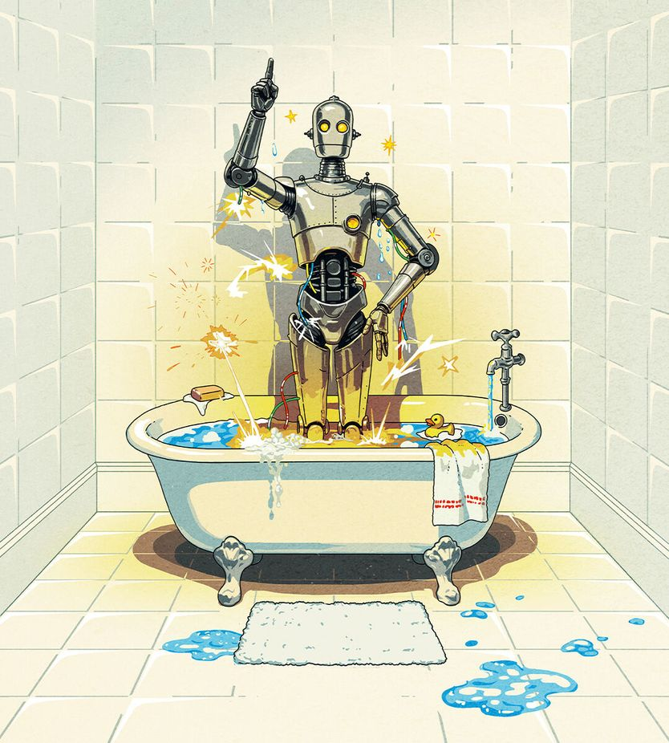

假如机器接管了科学
What if the machines take over science?
人工智能将迫使学者重新发明自己的学科

- 2026年10月6日可能被记为数学史上最重要的一天：OpenAI发布700多篇论文，声称对372个困扰学界数十年的问题取得进展或给出解答。数学家们仍在消化其意义，而本文认为真正需要面对的是AI将如何影响整个科学。
- AI最先在数学上显露实力，因为数学证明由公理推出、可被机械验证；但它同样在实证科学中加速进展：更准的天气预报、数以百万计的候选新材料、核聚变实验控制，以及从氨基酸序列预测几乎所有已知蛋白质的形状。
- 反对声不小。“人类数学协会”900多名学者警告“数学家没有要求做这项工作”，认为做数学的回报在于钻研过程而非证明本身。文章反驳：学者并不比其它职业更有权垄断知识生产，你吞下扑热息痛止痛时，依靠的也是一套有效但未被完全理解的机制。
- 真正的担忧是权力。AI公司砸钱做科学，是因为解决难题能让模型更聪明；若这一点坐实，大实验室将掌握能自我改进的模型。文章主张科学必须保留“人在回路”：算力和实验资源应由能就AI在做什么形成知情判断的人来调度，哪怕这会拖慢进度。
2026年10月6日，也许会被记为数学史上最重要的一天。美国前沿实验室OpenAI发布了700多篇学术论文，声称对372个困扰学者数十年的问题取得了进展或给出了解答。数学家们至今仍在消化：这对本学科意味着什么。
其影响远不止于数学。是时候认真对待人工智能（AI）将如何影响整个科学了。这批数学成果同时是三件事：人类的一次飞跃；一个凸显AI飞速进步的奇迹；以及对一种未来的警告——那时对宇宙的理解可能属于机器，而人类心智无法穿透它。问题在于，如何在取得进步的同时不牺牲理解。
AI之所以在数学上如此鲜明地展现出科学潜力，是因为数学证明由公理推出、而非依赖证据，原则上可以机械地验证。但正如本周我们的科技特刊所报道的，AI同样加速了实证科学的进展，部分原因是其它领域把数学当作工具。AI让天气预报更准；它提出了数以百万计可能有用的新材料；它帮助控制核聚变实验；它还能从组成蛋白质的氨基酸序列预测出几乎所有已知蛋白质的形状——这项进展拿到了诺贝尔奖。
更多由AI驱动的惊人科学进展几乎必然到来。最激动人心的可能出现在生物学。研究者正用AI设计抗旱作物、寻找新药，以及创造（我们希望如此）攻击有害细菌的“友好”病毒。还有人在努力用AI建立细胞如何运作的计算机模型。一旦掌握了“硅基生命”，科学家或许就能真正驾驭生物学，获得从零创造全新生物体的能力。若真如此，DNA将不过是另一种形式的计算机代码，可以像AI模型里的词元串一样被摆弄。
和许多与AI相关的前景一样，这既令人头晕目眩，也同样令人恐惧。许多数学家的第一反应是害怕。自OpenAI取得突破以来，他们一直对该实验室侵入自己的学科愤愤不平。“人类数学协会”——一个由900多名学者组成的团体——警告说，“数学家并没有要求做这项工作”。他们表示，做数学的回报不来自证明本身，而来自钻研的过程，因为正是过程推进了人类的理解。让AI批量产出无法理解但正确的解答，就像把作业答案直接给学生：没有付出，就没有学习。
这些抱怨带有自我辩护的成分。学者并不比任何其它职业更有权支配知识的生产。求真惠及所有人，不能被某个学者行会垄断。学术界的等级是靠证明定理攀上去的，但它并不神圣；必要时必须重建，以适应一个由AI产出证明、人类消化证明的世界。在科学中，理解不该被抬得高于结果。每当你吞下一片扑热息痛来止住头痛，你依靠的就是一套有效但并未被完全理解的机制。
然而，把科学交给机器的担忧并非杞人忧天。AI公司向科学倾注资源并非出于利他，而是因为和人一样，解决问题能帮助模型变得更聪明。许多研究者认为，一个在解决科学问题上变得更好的模型，在其它一切事情上也会变得更好。若真如此，就没有谁能与大型AI实验室竞争了——它们最终将掌握能自我改进的模型，并按某些定义，成为无法理解的智能。这些天才AI科学家会通过人形机器人，或像Anthropic已经做的那样把模型接上实验设备，与物理世界连接起来。
这个未来给科学带来的问题，与它给社会带来的问题大体相同。人类将不得不为机器提供资源，好让它们继续取得进展。如果没人理解它们在做什么，光是掏钱就是鲁莽的。没有人能确定这些模型是在为人类的最大利益运转。即便AI实验室成功让机器与人类利益“对齐”、从而可以完全信任，一个人们只需问AI该做什么的社会（无论科学领域还是更广泛层面），也会让人类沦为机器的宠物。
如果代价是治愈所有疾病，有些人或许愿意接受。但至少在AI与人类之间建立起牢不可破的对齐之前，科学永远需要把人留在回路中。实验室可以用AI解决问题，但实验室、算力这些资源，应由能够就AI在做什么形成知情判断的人来调度和监督。这必然会拖慢进度，但如果要让AI继续处在人类掌控之下，这是必要的。
与此同时，人类引导下的机器科学将要求学者重塑自己的学科。科学家必须学会喜爱——并给予地位和职业晋升上的认可——引导模型，以及研究、验证和讲授它们的结果。政府也需要按同样的标准来分配科研经费。至于AI实验室，则应当做好科学公民：把成果提交同行评议，公开自己的方法和代码。
核对和消化计算机的研究结果，看上去是份不风光的工作。人类产出的科学之所以错误百出，部分原因正是学者去审查他人工作得不到回报。但重新强调验证与怀疑，会让科学变得更好。值得记住英国皇家学会17世纪采用的格言：Nullius in verba，意为“不轻信任何人的话”。这种精神如今需要同样用在机器做出的科学上。■